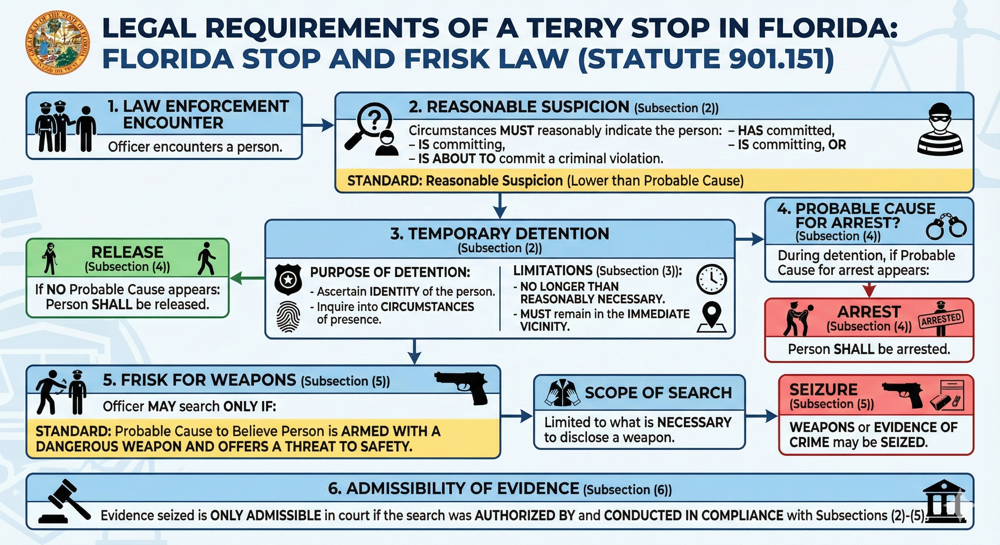

Possession of a Firearm by a Delinquent: Felony Dismissed
State Emailed Dismissal While I Was Parking at the Courthouse
Published on by Attorney Jeff Lotter
A routine seatbelt stop turned into a felony arrest. But a valid traffic stop doesn't mean everything that follows is legal. When we filed a motion to suppress challenging the unlawful Terry frisk, the State saw what was coming and dismissed the case.
Felony Weapons Charge
Possession of a Firearm by a Delinquent
Result: DISMISSED
State emailed dismissal as I was parking for the hearing
A 21-Year-Old Carrying a Juvenile Record
Our client was 21 years old. When he was 16, he had gotten into trouble and was adjudicated delinquent. Under Florida law, that juvenile record follows you until age 24 for purposes of firearm possession. Until then, you're treated as if you were a convicted felon - even though the offenses occurred when you were a child.
Since those juvenile charges five years ago, our client had stayed out of trouble. No arrests. No problems. He had moved on with his life. But the law doesn't care about rehabilitation when it comes to this statute.
Florida's Delinquent-in-Possession Law
Under Florida Statute 790.23, a person adjudicated delinquent for certain offenses cannot possess a firearm until age 24 - regardless of how long ago the juvenile offense occurred or how much they've changed. A single mistake at 16 can follow you for nearly a decade.
The Traffic Stop: Valid. The Search: Not.
Our client was stopped by a bicycle officer in downtown Orlando for not wearing a seatbelt. That stop was valid. Officers can pull you over for a seatbelt violation.
Within minutes, backup arrived. Officers ordered our client out of the vehicle. Under Pennsylvania v. Mimms, that's also lawful - officers can order a driver out during a traffic stop for safety reasons.
But what happened next crossed the line.
The Unlawful Frisk
Immediately after our client exited - wearing only basketball shorts and no shoes - an officer asked to pat him down. Surrounded by multiple officers and having just been told he had "no choice" about exiting, our client complied. During the pat-down, officers felt an object, questioned him about it, reached into his pocket, and placed him under arrest.
Why the Frisk Was Illegal
A Terry frisk - a pat-down for weapons - requires more than just a traffic stop. Under Terry v. Ohio and Florida's Stop and Frisk Law (F.S. 901.151), officers need reasonable, articulable suspicion that the person is armed and dangerous.
Here, there was nothing. The body camera footage and police reports showed:
No Furtive Movements
Our client didn't reach for anything, hide anything, or make any sudden movements. The reports don't document any suspicious conduct.
No Bulges or Visible Weapons
He was wearing basketball shorts. Officers didn't observe any bulges suggesting a weapon. There was nothing to see.
No Threatening Behavior
Our client was polite and cooperative throughout. He never threatened the officers or gave them any reason to fear for their safety.
Just a Seatbelt Ticket
A civil traffic infraction doesn't create reasonable suspicion of criminal activity, let alone a reasonable belief someone is armed. See D.L.J. v. State, 932 So. 2d 1133 (Fla. 2d DCA 2006).

Three Constitutional Violations, One Motion
Our motion to suppress attacked the search on multiple grounds:
1. No Basis for the Terry Frisk
Officers had no reasonable suspicion our client was armed and dangerous. The frisk was based on nothing more than the desire to search - which is constitutionally impermissible.
2. "Consent" Was Coerced
Even if the officer technically "asked" for consent, it wasn't voluntary. Our client was surrounded by multiple officers, had just been told he had "no choice" about exiting, and was immediately confronted with a request to be searched. That's acquiescence to authority, not consent. Popple v. State, 626 So. 2d 185 (Fla. 1993).
3. Plain Feel Doctrine Violation
Even during a lawful frisk, officers can only seize items whose incriminating nature is "immediately apparent" by touch. Here, the officer felt a cylindrical object and had to ask what it was. That question proves he didn't know. Under Minnesota v. Dickerson and C.A.M. v. State, the seizure was unconstitutional.
Months of Delay, Then a Last-Minute Dismissal
The case dragged on for over a year. The arresting officer was deployed on military orders, so hearings kept getting pushed back. Month after month, our client waited - a felony charge hanging over his head.
We filed our motion to suppress. We explained to the prosecutor exactly why the Terry frisk was unconstitutional. We walked through the body camera footage. We cited the case law. The State's response: "We'll look at it."
We set the motion for hearing. The State said they were "reviewing it."
The day before the hearing, the prosecutor told me he "tended to agree" with my position and would reevaluate. That evening, I prepared for the hearing anyway. My client took the morning off work to appear in court.
Then, While Parking at the Courthouse...
I was pulling into the parking lot at the courthouse, ready to argue the motion. My phone buzzed. An email from the prosecutor: "I am dropping the case."
Did they hold onto the news just to make my client suffer a little longer? To force me to spend my evening preparing for a hearing they knew wasn't happening? I don't know. But it's hard not to wonder.
What I do know: the case was dismissed. Our client doesn't have a felony conviction. And the constitutional violations we identified were serious enough that the State didn't want to defend them in open court.
Result: All Charges Dismissed
No felony conviction. No prison time. A 21-year-old who made mistakes as a teenager gets to move on with his life - not because the system showed mercy, but because the police violated his rights and we forced the State to face that reality.
The Takeaway: A Valid Stop Doesn't Mean a Valid Search
Many people assume that if police had a reason to pull them over, everything that follows is legal. That's not how it works.
Each Step Requires Separate Justification
- Traffic stop: Requires reasonable suspicion of a traffic violation
- Order to exit: Automatically permitted during traffic stop (Mimms)
- Terry frisk: Requires reasonable suspicion person is armed AND dangerous
- Reaching into pockets: Requires contraband to be immediately apparent by touch
- Vehicle search: Requires separate justification (consent, probable cause, etc.)
The police violated at least three of these requirements. The firearm was found only because of those violations. Under the "fruit of the poisonous tree" doctrine, it all had to be suppressed.

Jeff Lotter
Criminal Defense Attorney | Former State Trooper
Jeff Lotter is an Orlando criminal defense attorney and former Florida Highway Patrol trooper. He uses his law enforcement background to build stronger defenses for clients facing criminal charges.
Related Articles
Facing Weapons or Felony Charges?
How evidence was obtained matters. An illegal search can invalidate the State's entire case. If you believe your rights were violated during an arrest, we need to review the body camera footage and police reports.
Free Consultation | Fourth Amendment Defense | Motion to Suppress | Weapons Charges
Law Office of Jeff Lotter PLLC
Serving Orlando, Orange County, and Central Florida